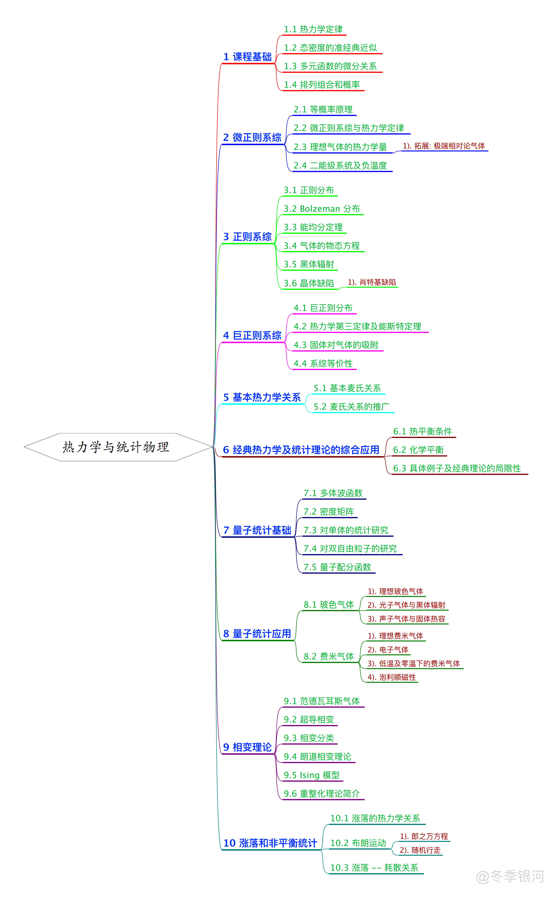

热力学与统计物理物理复习概要
最后更新：2021.11.09, 10:41
本文总结了本科热力学及统计物理学习的主要知识. 该文章于去年为理念经所夏令营面试做准备所写, 最早发布于知乎, 原标题为 “两个月速成 (误) 物理学本科高年级课程之统计物理篇: 总纲“.
(原) 序言
虽然说是速成, 但其实是复习, 希望不要被标题误导了… 因为研究生想做引力方面理论研究, 所以在两个月左右之后大概会去参加理论所的夏令营. 复习的内容主要是四大力学, 基本的广义相对论以及群论, 还有时间的话可能会写一点傅里叶光学和数理方法方面的东西. 虽然内容确实不少, 但想想去年电动力学考试的时候也才花了三天的时间复习, 两个月复习完这些也是有可能的吧? 果然 deadline 才是第一生产力 😂
由于写这个系列的目的是为了复习, 大部分内容都是按照自己的理解来写的, 难免有所纰漏. 如认为内容存在任何问题, 欢迎在评论区提出.
大纲

正文
这是两个月速成本科物理高年级课程系列文章的的统计物理篇, 这篇主要是整理一下上学期学过的内容的主干.
在课程基础部分, 主要是简单回顾一下热力学, 以及补充一点后面将用到的关于多元函数及概率论的知识.
正篇大致可分为四个部分: 经典统计, 量子统计, 相变理论, 涨落和非平衡统计理论.
经典统计的重点是系综理论. 系综是统计物理中最重要的概念, 简单地来说, 系综是给定宏观态 (如系统的体积 $V$, 粒子数 $N$, 能量 $E$) 下, 所有可能的微观态组合形成的集合 (感觉上有点像量子力学中的简并能级?). 注意, 这个集合中的元素不是单个的微观态, 而是微观态的组合.
根据所取定的宏观量的不同, 将系综分为微正则系综, 正则系综, 巨正则系综三种. 微正则系综 的特点是体系具有确定的粒子 $N$, 体积 $V$, 能量 $E$, 其统计特点是直接考虑系统的每一个微观态, 因此使用上并不方便. 正则系综 则不要求体系具有确定的能量, 且其是对体系能量进行统计, 无须知道微观态的计算方法, 使用上更为方便. 此外, 在处理诸如气体吸附的问题时, 体系的粒子数会发生变化, 由此想到在正则系综的基础上, 进一步去除对体系粒子数目 $N$ 的限制, 由此得到的系综称为 巨正则系综.
无论是正则系综还是巨正则系综, 其理论的根源都是微正则系综, 而微正则系综又归结与统计物理的两大基本假设: 等概率原理与最概然原理. 等概率原理认为每一个微观台出现的机率都是相同的, 而最概然原理则认为平衡时系统所处的状态是概率最大的状态. 从平衡假设 (最概然原理) 出发, 可以导出平衡条件, 由此可以定义出一系列热力学量.
利用系综理论进行计算时, 最重要的量是体系的 (巨) 配分函数. 简单来说, 所谓配分函数就是归一化常数的倒数. 一旦知道了系统的配分函数, 就可利用其计算出所有热力学量.
经典统计之后是量子统计. 一般的教材会直接通过数个数的方式直接给出三大统计分布 (麦克斯韦—玻尔兹曼分布, 波色—爱因斯坦分布, 费米—狄拉克分布), 但更本质的方法是直接从多体波函数出发, 得到费米子和玻色子的统计方法, 再结合不同系综的密度矩阵 (可视为经典系综理论中的概率分布在量子力学中的推广), 得到运用量子统计法时的分布. 此外, 玻尔兹曼分布可视为费米分布与玻色分布在某种情形下的极限分布.
在多体波函数的研究中, 由于玻色子和费米子的多体波函数具有不同的轮换对称性 (对称与反称), 而各粒子态的张量积本身并不具有这样的对称性, 需要按照对称性, 利用单粒子态的张量积, 构造对称与反称波函数作为哈密顿算符的本征函数.
在得到了不同的量子统计分布后, 为了便于计算, 往往将求和换为积分, 则通常通过引入准经典假设来进行. 所谓准经典假设, 就是认为相空间具有最小分辨率 $h^{DN}$ ($D$ 为位形空间的维数, $N$ 为体系的粒子数目), 从而利用该分辨率可得到一个平均态密度. 原本的求和式可视为态密度为无数 $\delta$ 函数的求和, 因此求和化为积分的过程实际上就是利用平均态密度代替 $\delta$ 函数形式的态密度, 亦即使态的分布平滑化. 在相空间足够大时 (相对最小分辨率), 这样的近似具有很好的精度.
利用获得的量子配分函数, 可以以类似经典系综理论中的方法, 计算体系的各种热力学量. 其中最简单的体系是理想玻色气体与理想费米气体.
在相变理论的部分, 先是从范德瓦耳斯气体 (气—液相变) 出发, 引出临界点、临界指数等基本概念, 随后讨论了超导相变的唯象解释.
在有了两个具体例子之后, 介绍了相变的分类, 并进一步介绍了朗道二级相变理论. Ginzberg—Landau 理论可以视为其在超导中的一个具体应用.
Ising 模型是介绍相变时一个重要的模型. 在一维情形中, 平均场近似下的 Ising 模型可以观测到相变解, 但随后的严格解表明, 一维情形并不存在相变解. 与一维情形不同, 二维 Ising 模型中是可以观测到相变的. 不过解析解法较为复杂, 所以一般在热统学习中具体求解.
在有了对 Ising 模型的基本认知之后, 简单介绍了重整化群的基本思想.
在统计物理这门课程的最后一个部分, 介绍了非平衡统计理论. 与平衡态统计中关注物理量平均值不同, 非平衡统计关注的是物理量的涨落. 随后通过对一维随机行走的研究, 具体计算了涨落、关联函数等物理量, 并引出了涨落—耗散关系.
在非平衡统计理论的最后, 还介绍了 Onsager 关系.
本博客所有文章除特别声明外，均采用 CC BY-NC-SA 4.0 协议 ，转载请注明出处！